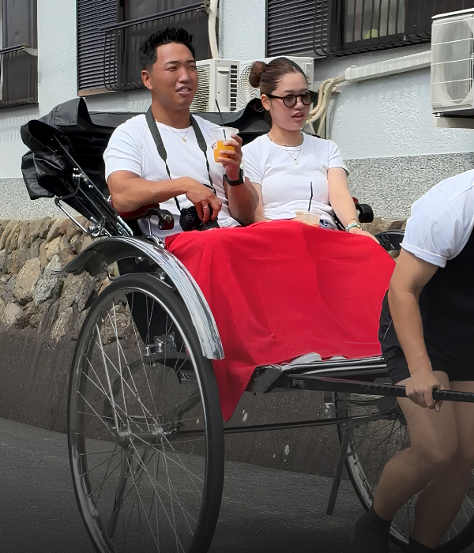
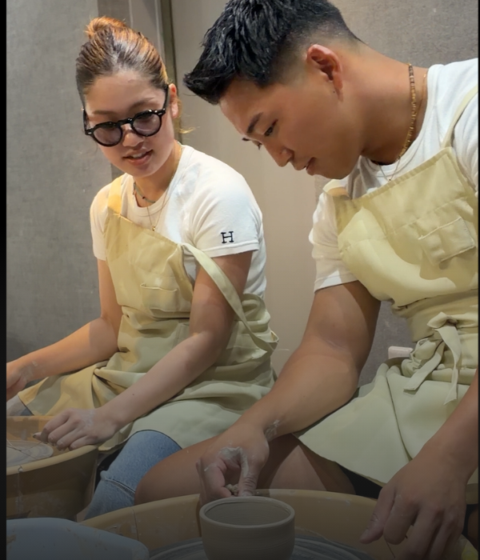
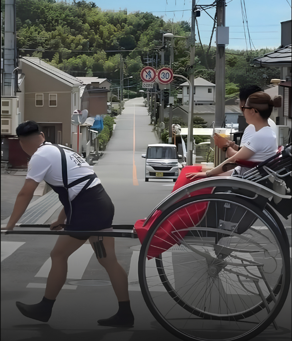

ふたりとも映る自然な姿
カメラを気にせず、体験を楽しむふたりの姿を残します。
ふたり旅フィルム
～帰ってからも続く、ふたり旅～
Concept
ふたり旅フィルムは、水間門前町で過ごすふたりの体験を、
その日だけでなく、あとから見返せるフィルムとして残す、
新しい日帰り旅のかたちです。
人力車に乗って笑う時間も、陶芸に夢中になる表情も、
ふたりで楽しむ姿を、そのままフィルムに。
Scenes
Value

カメラを気にせず、体験を楽しむふたりの姿を残します。

人力車や陶芸の中で生まれる自然な表情を残します。

写真だけでは残らない、旅の流れや余韻まで一本に。
Plan
ライトプラン
19,800円（税込）
人力車＋町歩き
短いフィルム納品
気軽に試せる入口プラン
おすすめ
スタンダードプラン
24,800円（税込）
人力車＋陶芸＋町歩き
短いフィルム納品
スタンダードプランに
＋5,000円で陶芸体験まで残せる
※上記は初期10組限定の特別価格です。今後、価格は変更となる場合があります。
Flow
希望日をフォームまたはLINEからご相談ください。
当日は水間門前町でスタッフと合流します。
ふたりのペースで体験を楽しんでいただきます。
編集した短いフィルムを後日オンラインでお届けします。
FAQ
はい、大丈夫です。ポーズを決める撮影ではなく、体験を楽しむ自然な姿を残します。
はい。ライトプランでは、人力車と町歩きを中心にお楽しみいただけます。
普段のお出かけ服で大丈夫です。季節感のある服装だと、より雰囲気が出ます。
思い出として見返すほか、SNS投稿や友人への共有にもご利用いただけます。